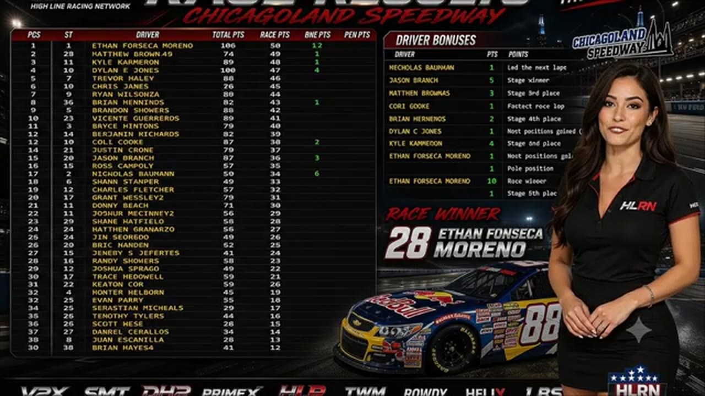

Kyle Cameron
Team assignment not stated in the structured owner record.
A PODIUM FILE WITH AN OPEN RESULT HORIZON
- Official files
- 12
- Central editions
- 3
- Exact tape cues
- 9
- Accepted podiums
- 1
Kyle Cameron has 1 position-specific top-three receipt: S2 R3 at Chicagoland (P3). No feature win is currently supported in the accepted result ledger. A consistently stated team affiliation remains open for owner review. The currently indexed source window runs from December 22, 2025 through July 20, 2026.
The official tape index connects the name to 12 race files, 3 Central editions, and 9 primary-broadcast navigation cues. The densest direct-tape categories are incident (1 cue) and finish (1 cue). Those counts describe where the name is easiest to find; they are not fault, pace, or performance grades. A source-attributed car frame is published with its original video and timestamp. That is the current discovery map for Kyle Cameron.
That is enough for a real result dossier without pretending the archive knows every start or finish. Owner classifications can extend the record later through the same stable race IDs. Separately, 12 Highline Live files sit on the bonus shelf and never enter the official season ledger. The displayed name is labeled transcript normalized; that status remains visible so an owner roster can strengthen or correct the identity without rewriting the evidence trail. Those boundaries define Kyle Cameron's public HLRN file.
9 featured race-tape cues
These are discovery routes into complete HLRN broadcasts, not performance grades or inferred results.
- S2 / R3 · FINISH
Ethan Moreno completes Chicagoland's final restart
Ethan Moreno controls the last restart, pulls clear through the final lap, and receives the live Chicagoland winner call with Matt Brown, Dylan Jones, and Kyle Cameron behind him.
Chicagoland - S1 / R16 · STAGE
A stage-winner call at Talladega
S1 / R16 at 1:29:39: The broadcast enters a stage-scoring discussion at Talladega with Bryce Hinton, Alex Leeball, and Kyle Cameron in the scoring call. The clip preserves the on-air timing or points call without promoting it into a complete stage result; the accepted feature result ledger remains separate.
Talladega - S1 / R13 · BATTLE
Kyle Cameron's wall brush brings Tommy Ryan back to Trevor Haley
Kyle Cameron brushes the wall beside leader Trevor Haley as Tommy Ryan closes on fresher tires. Ryan's four-tire stop is beginning to fade, and Haley stretches the margin with fewer than ten scheduled laps remaining.
Dover - S2 / R3 · INTERVIEW
Kyle Cameron explains the race from the booth
S2 / R3 at 2:47:03: Kyle Cameron and Ethan Moreno join the HLRN booth for a first-person race account. The interview is preserved as context and does not create a placement claim outside the accepted result ledger.
Chicagoland - S1 / R16 · RESTART
Kyle Cameron and Ryan Wilson bring Talladega back to green
S1 / R16 at 2:27:43: Kyle Cameron, Ryan Wilson, Jerry Fassett, and Bryce Hinton are in the booth's front-pack call as Talladega returns to green. The cut keeps the restart launch and the first lap of lane development together.
Talladega - S1 / R12 · STRATEGY
Trevor Haley enters the Daytona pit-strategy swing
S1 / R12 at 53:44: Pit timing starts to reorganize the field, with Trevor Haley, Matt Brown, Kyle Cameron, and Chris Vincent named in the sequence. The clip is a strategy receipt from the primary Daytona broadcast, not a reconstructed scoring sheet.
Daytona - S2 / R4 · INCIDENT
Matthew Graham and Kyle Cameron center a multi-car EchoPark replay
A loose car turns the front of the pack into a multi-car wreck involving Kyle Cameron, Dylan Jones, Randy Showers, and others. The replay follows Matthew Graham moving across the No. 8's nose without converting the booth call into a ruling.
EchoPark Speedway - S1 / R13 · FEATURE
Dover's team roll call sets the current race field
Before the grid, HLRN checks the AWR and Darkhorse lineups and notes the major names absent from Dover. The card is a current-race roster check, replacing an earlier embedded segment that was mislabeled as the opening green.
Dover - S1 / R12 · POSTRACE
Kyle Cameron and Trevor Haley anchor the Daytona post-race result review
S1 / R12 at 1:38:48: The reviewed live-race close has passed before this Daytona result booth review begins with Kyle Cameron, Trevor Haley, Matt Brown, and Juan Escamilla named in the discussion. It remains post-race context, not a new incident, stage, strategy call, finish, or result receipt.
Daytona
Recent editions connected to Kyle Cameron
Moreno Owns the Chicagoland Closing Run
Nick Bowman led the most laps, but Ethan Moreno pulled clear of Matt Brown and Kyle Cameron when the final lap arrived.
S1 / R16Applegate Wins After Haley's DQ
Trevor Haley reached the stripe first, but HLRN's review removed the No. 12 for a below-yellow-line advance and contact, elevating David Applegate.
S1 / R15Stamper Survives the Final Reset
Three green-white-checkered attempts, a last restart, and one premature call later, Shawn Stamper finally crossed as the winner.
Verified team history is not consistently stated. Complete starts, finishes, and points remain open beyond the recovered results. Name normalization remains reviewable against owner records.